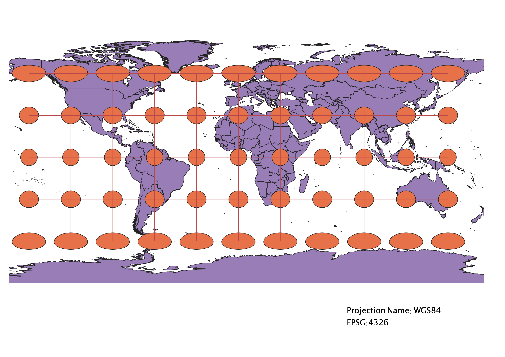
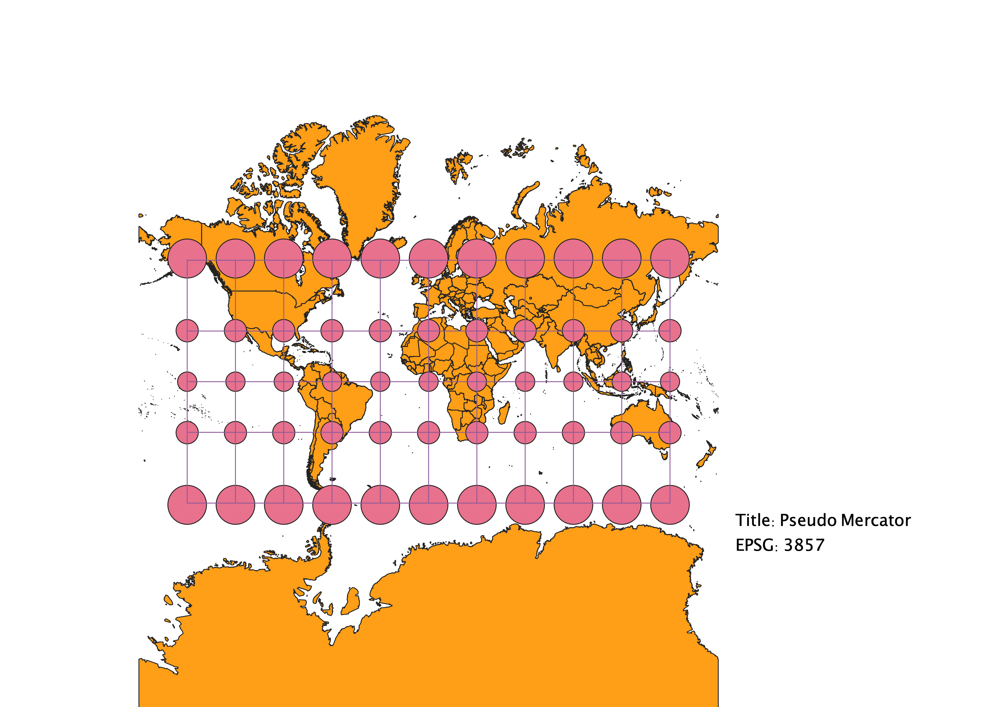
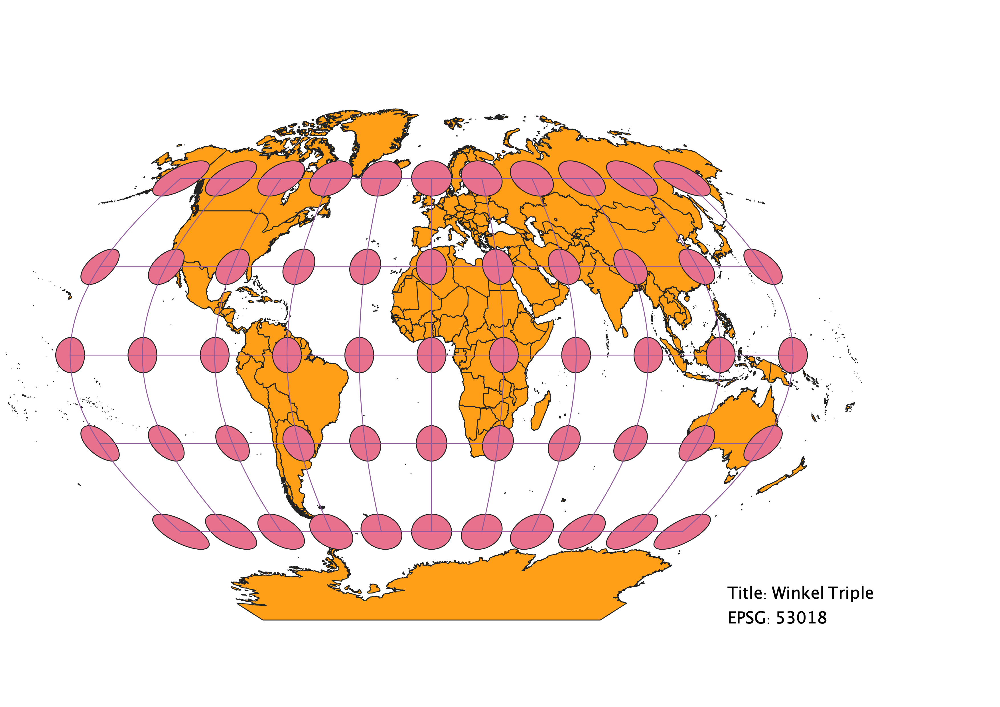
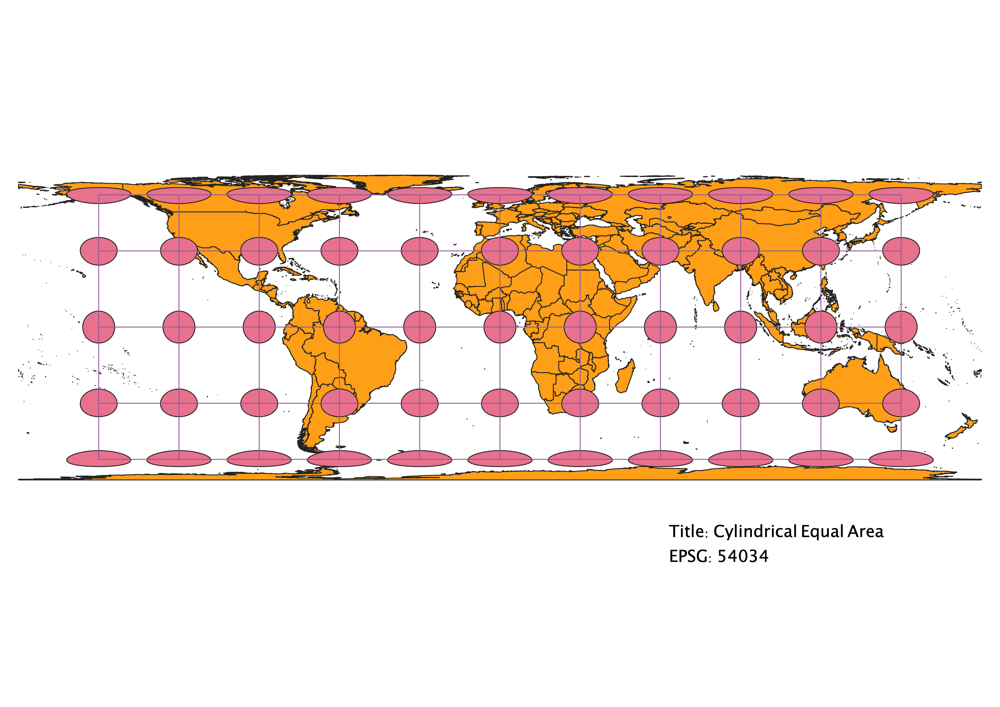
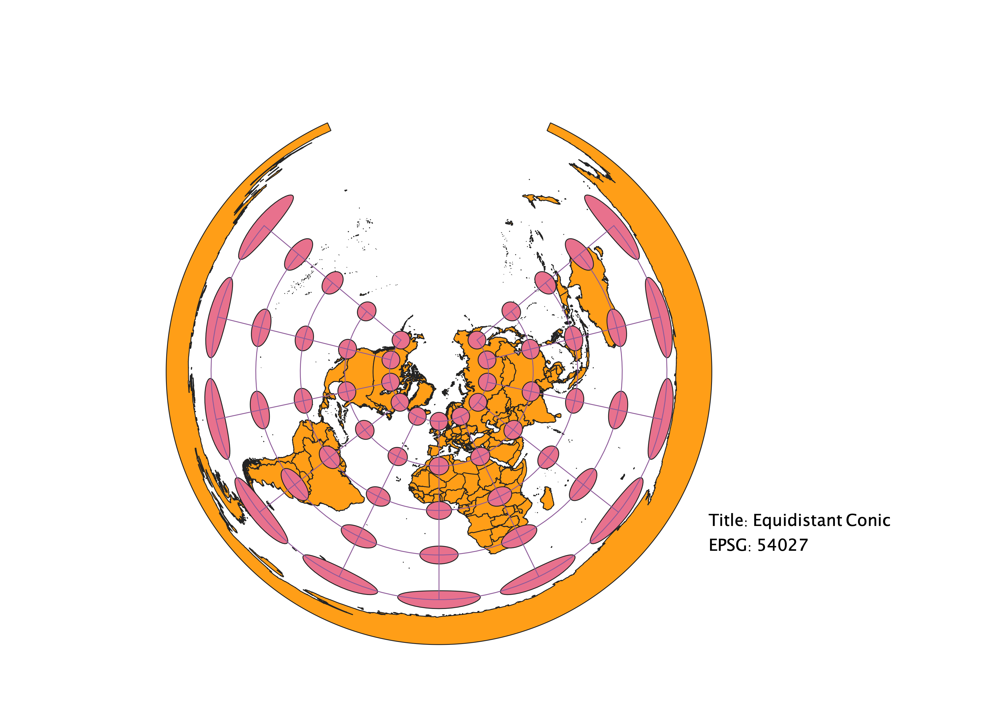
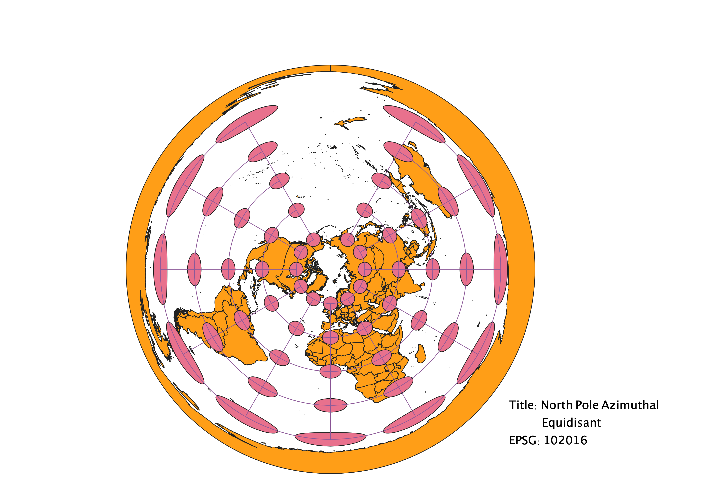
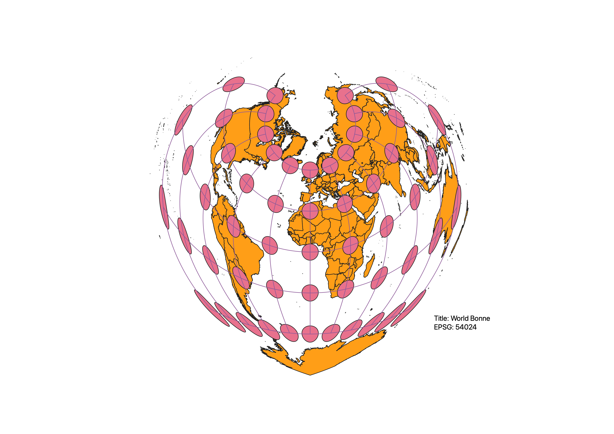
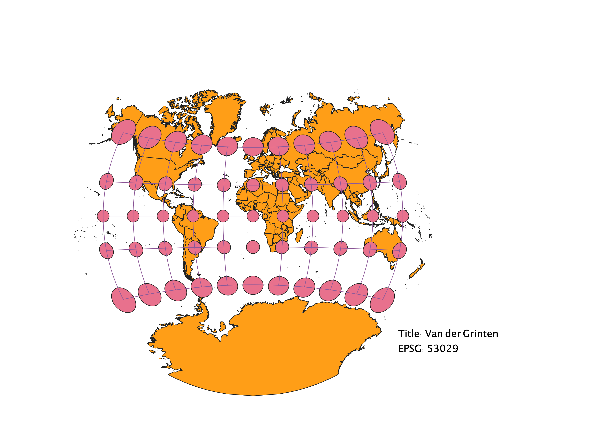

In this project I learned how to display images in different projections
Using QGIS, I was able to take a natural earth shapefile, and export different maps by changing the EPSG projections. Using the Indicatrix Plugin, it added a layer to see how distortion affects each projection. Indicatrix displays Tissot circles, tracking the change that affects either shape, distance, direction, etc.
WGS84 Projection
Observations: In the WGS84 projection, shape and direction are well preserved. However, the size of countries further from the equator are larger and stretched horizontally.

Aitoff Projection
Observations: The Aitoff projection bends the latitude and longitude, preserving shape at the center of the map. However, there is distortion of shape, area and distance on the outskirts of the map.This is caused by the growing distance between bending latitude and longitude lines.

Pseudo Mercator Projection
Observations: The Pseudo Mercator projection has similar problems as WGS84. Latitude and Longitude are kept straight, but latitude distances begin to vary towards the poles, causing countries close to the polls to become very distorted in size. Otherwise, shape and direction are well preserved.

Winkel Triple Projection
Observations: The Winkel Triple combines bending longitude lines with flat latitude lines, allowing for the size, shape, and area of countries to be relatively accurate, though distance becomes compromised.

Cylindrical Equal Area Projection
Observations: Latitude and longitude are equidistant of eachother. While size, shape, and area near the equator are well maintained in this projection, the distortion of shape near the poles is very prominent. Direction and distance follow a similar problem: maintained at the equator, not so much near the poles.

Equidistant Conic Projection
Observations: This projection helps prevent distortion at the poles, which many other projections fail to do. However, it does a poor job projecting the entire world map, as the further from the pole one looks, the wider shape becomes. Therefore, area and direction are pretty accurate, but shape and distance become very distorted. As well, the map breaks, so there lacks continuation in the circular shape.

North Pole Azimuthal Equidistant Projection
Observations: This projection is very similar to the Equidistant Conic, and has similar accuracies and distortions. The pole has accurate shape, distance, and direction, but the further from the poles, as latitude and longitude become more distant, the shape, area, and direction all become skewed.

Bonne Projection
Observations: The most prominent observation is the heart shaped manor of this projection. Maintaining shape and area around the north pole, the curvature of the latitude and longitude cause the map to become distorted in shape, area, distance, and direction farther from the equator and meridian.

Van der Grinten Projection
Observations: Around the equator/meridian, the latitude and longitude are kept straight, and bend outward towards the poles. Then bend allows less distortion, but size is greatly affected towards the poles.
